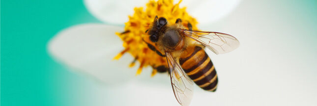

Les abeilles domestiques
L’abeille domestique vit en colonie, généralement dans une ruche ou une cavité chez un apiculteur, avec des milliers d'autres abeilles domestiques. La ruche est très bien organisée: chaque abeille effectue une tâche particulière. Il y règne une hiérarchie très stricte organisée autour d'une reine, pour mieux répondre aux besoins de la colonie. On observe trois castes dans la colonie: la reine, les ouvrières, les fauxbourdons. La reine est la seule femelle à être fertile. La reine se fait féconder, durant son vol de fécondation, par les mâles (les faux-bourdons) afin d'assurer la suite de la ruche. Les abeilles les plus nombreuses dans la ruche sont les ouvrières (plusieurs dizaines de milliers). Ce sont elles qui fournissent la nourriture pour toute la colonie et ce sont également elles qui fabriquent du miel et de la cire en transformant le nectar récolté que les hommes pourront ensuite récolter et consommer. Les ouvrières peuvent assumer plusieurs rôles tout au long de leur vie: nettoyeuse (des alvéoles de la ruche), nourrice (approvisionnement des larves âgées), cirière (production de cire), magasinière (fabrication et stockage du miel), gardienne (défense de l’entrée de la colonie) ou butineuse (récolte du nectar et du pollen). Les mâles, également appelés faux-bourdons, ne participent pas à la récolte du pollen et du nectar, car ils ont une trompe trop courte. Ils n’ont pas de dard, sont donc sans défense. Leur rôle principal est de féconder les jeunes reines.